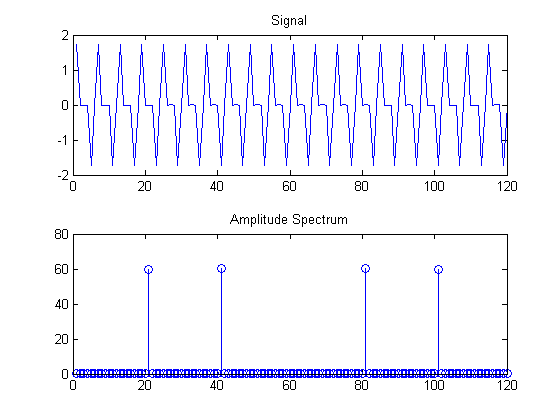
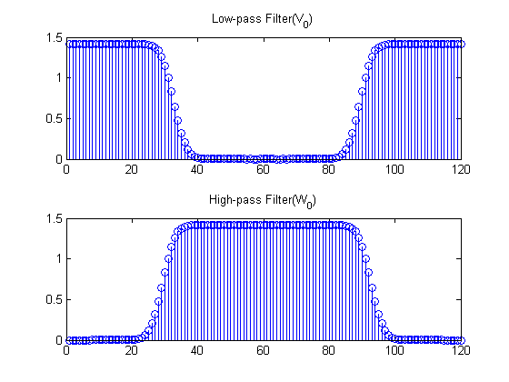
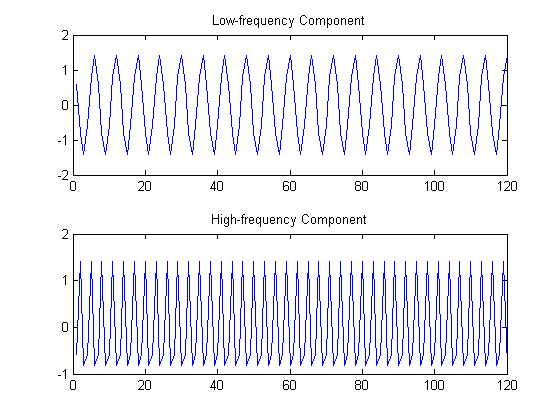
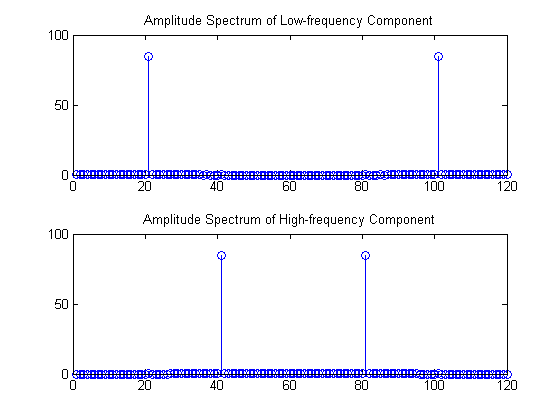
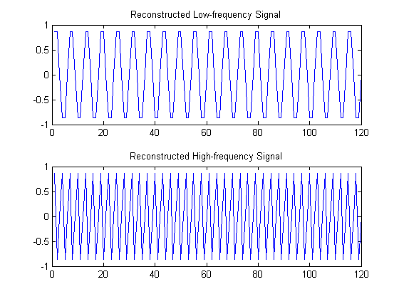
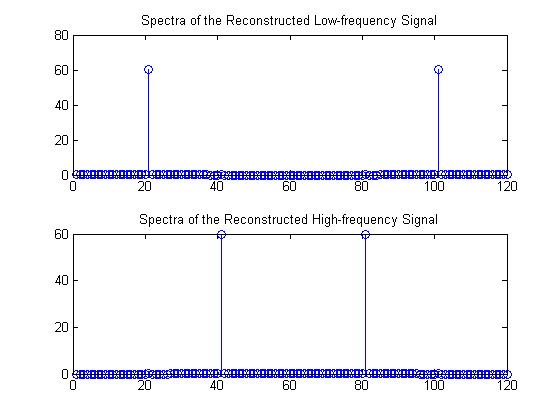
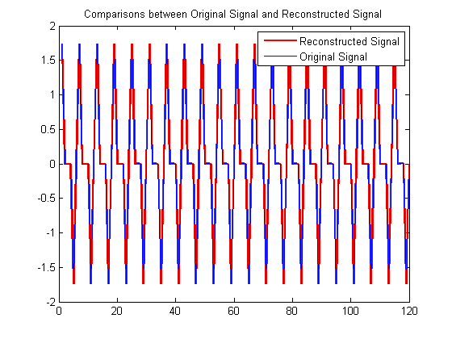

±¾³ÌÐòÓÃMallatË㷨ʵÏÖС²¨±ä»»
Contents
±à³ÌÈË É³Íþ(Wei Sha) °²»Õ´óѧ(Anhui University) ws108@ahu.edu.cn
clc;clear;
f1=50;
f2=100;
fs=2*(f1+f2);
Ts=1/fs;
N=120;
n=1:N;
y=sin(2*pi*f1*n*Ts)+sin(2*pi*f2*n*Ts);
figure(1)
subplot(2,1,1)
plot(y);
title('Signal')
subplot(2,1,2)
stem(abs(fft(y)));
title('Amplitude Spectrum')

2.С²¨Â˲¨Æ÷Æ×·ÖÎö
h=wfilters('db30','l');
g=wfilters('db30','h');
h=[h,zeros(1,N-length(h))];
g=[g,zeros(1,N-length(g))];
figure(3);
subplot(2,1,1)
stem(abs(fft(h)));
title('Low-pass Filter(V_{0})')
subplot(2,1,2)
stem(abs(fft(g)));
title('High-pass Filter(W_{0})')
sig1=ifft(fft(y).*fft(h));
sig2=ifft(fft(y).*fft(g));
figure(5);
subplot(2,1,1)
plot(real(sig1));
title('Low-frequency Component')
subplot(2,1,2)
plot(real(sig2));
title('High-frequency Component')
figure(6);
subplot(2,1,1)
stem(abs(fft(sig1)));
title('Amplitude Spectrum of Low-frequency Component')
subplot(2,1,2)
stem(abs(fft(sig2)));
title('Amplitude Spectrum of High-frequency Component')
  
4.MALLETÖع¹Ëã·¨
sig1=dyaddown(sig1);
sig2=dyaddown(sig2);
sig1=dyadup(sig1);
sig2=dyadup(sig2);
sig1=sig1(1,[1:N]);
sig2=sig2(1,[1:N]);
hr=h(end:-1:1);
gr=g(end:-1:1);
hr=circshift(hr',1)';
gr=circshift(gr',1)';
sig1=ifft(fft(hr).*fft(sig1));
sig2=ifft(fft(gr).*fft(sig2));
sig=sig1+sig2;
5.±È½Ï
figure(7);
subplot(2,1,1)
plot(real(sig1));
title('Reconstructed Low-frequency Signal');
subplot(2,1,2)
plot(real(sig2));
title('Reconstructed High-frequency Signal');
figure(8);
subplot(2,1,1)
stem(abs(fft(sig1)));
title('Spectra of the Reconstructed Low-frequency Signal');
subplot(2,1,2)
stem(abs(fft(sig2)));
title('Spectra of the Reconstructed High-frequency Signal');
figure(9)
plot(real(sig),'r','linewidth',2);
hold on;
plot(y);
legend('Reconstructed Signal','Original Signal')
title('Comparisons between Original Signal and Reconstructed Signal')
  